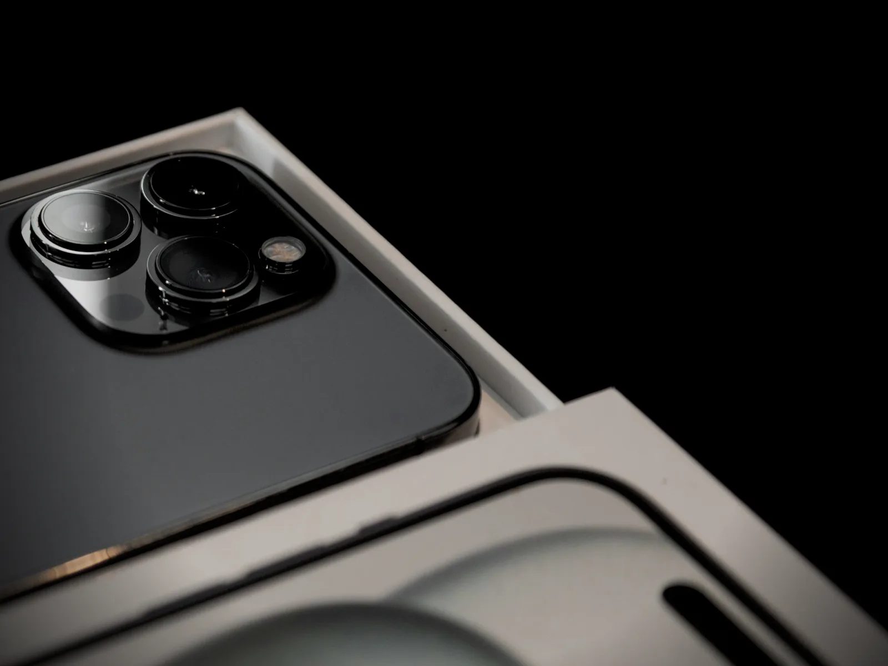
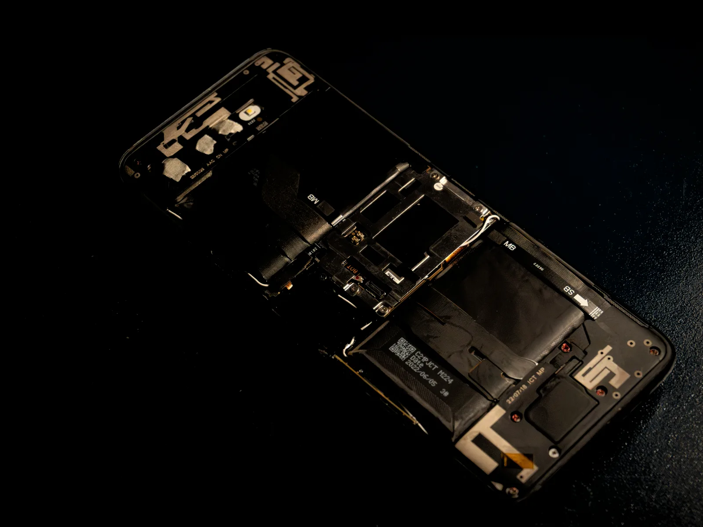

AURA Trade In
Consigue un descuento1 al entregar tu dispositivo anterior.
Lo reciclaremos de forma responsable o le daremos una segunda vida. Tú estrenas AURA; el planeta respira.

Calculadora
¿Cuánto vale lo que ya tienes?
Tres respuestas y tendrás la cifra. Sin registrarte y sin compromiso: si cambias de idea, lo quitas en un toque.
Tienes un crédito activo
La calculadora no está disponible ahora mismo
Aun así, no lo guardes en un cajón: recogemos tu dispositivo anterior y lo reciclamos gratis.
Cómo funciona
Tres pasos. Cero burocracia.
De tu cajón a su segunda vida sin que tengas que pensar en nada más.
-
Valóralo aquí
Elige tu dispositivo y su estado. Verás al instante cuánto vale, sin registrarte y sin esperas.
-
Descuéntalo de tu compra
Aplica el crédito y se restará en la bolsa al tramitar el pedido de tu nuevo auraPhone, auraPad o auraBook.
-
Entrégalo sin moverte
Cuando recibas tu nuevo AURA, un mensajero recoge el anterior en casa, con la caja de envío incluida. Lo revisamos y confirmamos el valor.
Medio ambiente
Una segunda vida. O un reciclaje impecable. Nunca un cajón.
Si tu dispositivo todavía tiene mucho que dar, lo reacondicionamos para otra persona. Si ya no, nuestros socios de reciclaje recuperan su aluminio, su cobalto y sus tierras raras para fabricar los próximos AURA.
- Borrado certificado de tus datos antes de cualquier otro paso
- Reacondicionamiento con piezas originales AURA
- Recuperación de materiales en plantas certificadas de la UE
- Caja de recogida de cartón 100 % reciclado

100 %
De los dispositivos que recibimos se reutilizan o se reciclan
Gratis
La recogida en casa, con la caja de envío incluida
14 días
Para entregar el anterior desde que recibes tu nuevo AURA
Preguntas frecuentes
Lo que suelen preguntarnos.
¿Qué dispositivos puedo entregar?
Los auraPhone, auraPad y auraBook que aparecen en la calculadora. Si el tuyo no está, no lo guardes en un cajón: lo recogemos y lo reciclamos gratis igualmente.
¿Cómo se calcula el valor?
Cada modelo tiene un valor máximo, el que vale como nuevo. Su estado ajusta esa cifra, y el descuento nunca supera el importe de tu pedido.
¿Cuándo se descuenta el crédito?
Al tramitar el pedido: lo verás en la bolsa como una línea «AURA Trade In» que resta del subtotal. Si quitas el crédito antes de pagar, no pasa nada.
¿Y si al revisarlo el estado no coincide?
Te proponemos el nuevo valor antes de cerrar nada. Si no te convence, te devolvemos el dispositivo sin coste y ajustamos el pedido.
¿Qué pasa con mis datos?
Antes de entregarlo, haz una copia en auraCloud, cierra la sesión de tu ID de AURA y restablécelo. Aun así, al recibirlo lo borramos con un proceso certificado: tus fotos no viajan con él.
¿Puedo entregar más de un dispositivo?
Se aplica un crédito por pedido. Si calculas otro, sustituye al anterior; el resto de tus dispositivos puede esperar a tu próxima compra.
¿Esto es real?
AURA es un proyecto de demostración. El crédito es simulado y solo se guarda en este navegador: nadie va a pasar a recoger tu dispositivo.
Siguiente paso
¿Qué vas a estrenar?
Notas
- Valores de AURA Trade In para dispositivos como nuevos; el estado los ajusta y el descuento nunca supera el importe del pedido.
- Confirmamos el valor al recibir el dispositivo. Si su estado no coincide con el indicado, te proponemos el nuevo valor antes de cerrar nada.
- Precios de venta recomendados en España, IVA incluido.
- AURA es un proyecto de demostración.